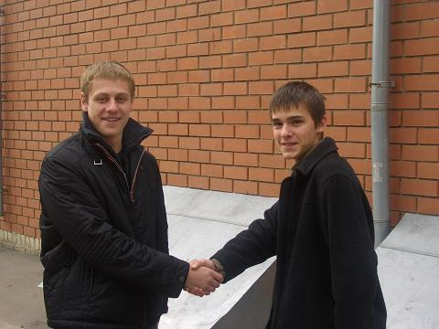
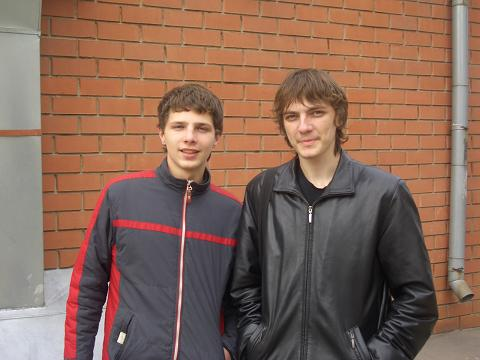
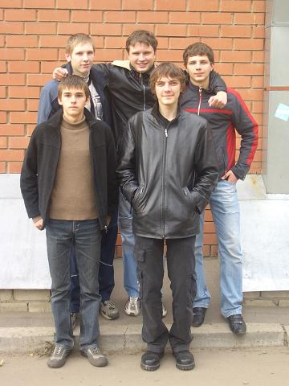

Это реконструированный сайт topw3.narod.ru | Харьков 2005-2007
ToP training league: part II
Второй чемпионат серии TTG получился несколько менее ярким и удачным нежели первый, хотя также достаточно интересным и неожиданным по результатам. Практически все игроки не занявшие мест в топ-4 прошлого тура предпочли проигнорировать второй тур, хотя добавилось немало новых игроков. Среди новичков можно отметить игроков бывшего клана 56K- Savage, Esh (игравший на чемпионате под ником Lapotb), а так же возможных в будущем игроков клана ТоР- Adoveov-a и Tem-у. Всего же количество участников достигло 10.   
Игры начались с определенной задержкой вызванной опозданием Exe и Savag-а. Первые матчи стартовали около 10:30…
Результат Диабло на турнире вызвал шок. Уже в первой игре он играл против Adoveov-а, игрока с которым уже не раз встречался на других чемпионатах и ни разу не проигрывал. Тем не менее игра на EI закончилась поражением Диабло, так же как и следующий матч на TR против тиммейта Рекса, счет с которым в личных встречах у Диабло так же был 2:0. На этот раз вышло наоборот и Варден+панда 5-5 в финалке оказались значительно эффективнее 5-5 АМ+нага. Вылет в первом туре, первый в жизни для Диабло. Крайне неприятный сбой в игре обычно стабильного игрока, будем надеяться, что последний…
Диабло поздравляет Адовеова с победой
Черя начал пободрее взяв у тиммейта Рекса реванш за поражение в финале виннеров макснетовского чемпионата 2:0. На этот раз застройка на тиер-2 принесла успех Чере на TS. Результат второй игры было несложно предсказать, противостояние Чери против Exe закончилось предсказуемой победой последнего (TS). Черя закончил свое выступление в лузерах, когда повторно встретился с Рексом. На этот раз ТМ, игра затянулась, но Рекс построивший втихаря 2 химеры, легко выиграл финалку. Топ-6, вот результат триумфатора прошлого чемпионата на этом турнире…
Черя и Экзэ перед полуфиналом виннеров- победитель прошлого турнира и будущий победитель этого.
Продолжающий набирать форму Рекс на этот раз показал результат значительно лучший предыдущего. Упав в лузера в первом туре от Чери, Рекс не сломался и в лузерах в эльфийском мироре одолел Esh-а (TS), а затем произвел вышеупомянутую сенсацию отправив домой фаворита- Диабло. На стадии топ-6 "убиение соклановцев" продолжилось, на этот раз жертвой эльфа стал Черя. Последняя для Рекса игра на этом турнире проходила против Tem-ы, на TR. Рекс позволил сопернику поставить эксп после чего не смог защитить свой. Увы, но топ-4- вот тот максимум, которого достиг Рекс на этом турнире.
Exe с привычной для него ролью «паровоза клана» справился почти идеально. Последовательно победив- Savag-а (O- TM), Tem-у (H- TS) и Черю (O- TS), Экзэ неожиданно споткнулся в финале виннеров на харьковском середнячке Adoveov-е. Эту игру Андрей играл орком. В самый напряженный момент после финалки борьба шла уже практически на одних героях и в этот момент происходит дисконект. Ганнибал назначает победу андеда, Экзэ особо не протестует. В финале виннеров Экзэ со счетом 2:0 одолевает Tem-у (TS, TR). Особенно примечательной стала первая игра, эльф играл через соло панду, которая в конце игры получила 10-ый лвл. Суперфинала не было. Адовеов согласившись на второе место спокойно отправился домой еще до начала игр финала лузеров.
Клан ТоР после турнира,- кто-то доволен, кто-то нет))
Подводя итоги стоит сказать что чемпионат получился несколько смазанным из-за чрезмерно быстрого слета главных фаворитов (Диабло и ot100y), а так же отсутствия игр суперфинала, которые могли бы поставить жирную точку. Так или иначе второй тур завершен. ТоР-ы готовятся к выездным чемпионатам, которые и покажут их реальные возможности, а остальные игроки- к третьему туру лиги, который состоится 25 марта…